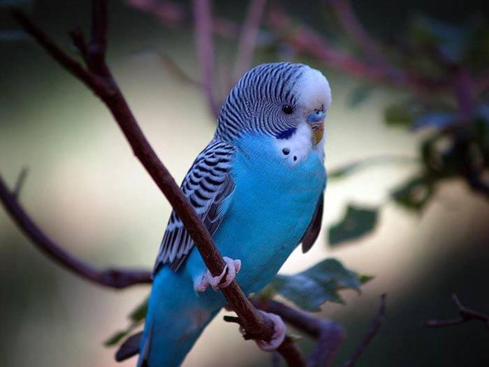
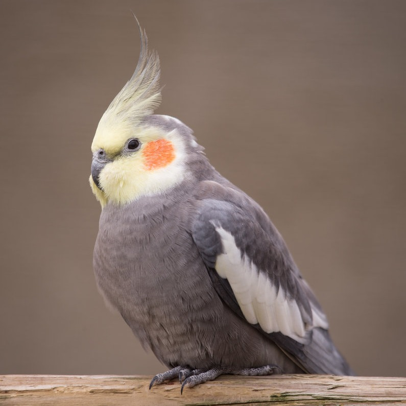
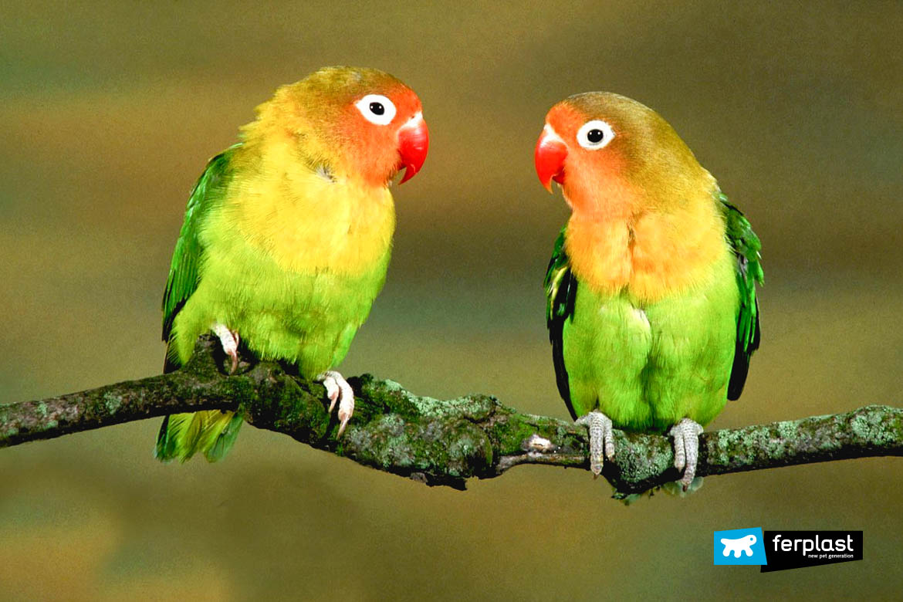

Виды
Волнистый попугайчик

Самый популярный домашний вид, легко приручается и может учиться говорить.
Корелла

Среднего размера, с «хохолком», спокойная и дружелюбная.
Неразлучники (lovebirds)

Маленькие, яркие, очень социальные птицы, любят жить парами. 🐦 Почему их называют неразлучниками Они действительно образуют очень крепкие пары: часто сидят рядом и чистят друг другу перья; могут переживать стресс при разлуке; в природе выбирают одного партнёра на долгий срок.